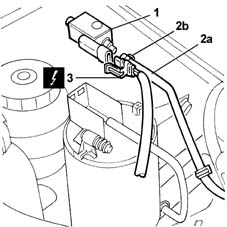

1080E24 fuel vapour by-pass valve/solenoid - r + r
- Path
- Procedures > 10 ENGINE UNIT > 1080 EXHAUST EMISSION CONTROL SYSTEM > 1080E evaporation control system > 1080E24 fuel vapour by-pass valve/solenoid - r + r
- Kind
- repair procedure (removal / refitting; the operation number is the code)
- Applies to
- engines: 1.6 16v; all production periods
- Interactive page
- https://sloeber94.github.io/elrnDB-fMltpl/en/#/2891310
Applies to: engines: 1.6 16v; all production periods
 Removing
Removing
 Refitting
RefittingOpen the bonnet lid.
1. Undo the four tabs (1a) to remove vapour cut-off solenoid (1b) from its seat on the activated carbon filter.
2. Disconnect pipe (2a) by undoing collar (2b).
3. Disconnect the electrical connection and remove the cut-off solenoid.
 | Name | Connector |
|---|---|---|
3 | Fuel vapour recovery solenoid |

Applies to: engines: 1.6 16v; all production periods
Refitting
RemovingCheck the condition of the cut-off valve.
Connect the electrical connection to the vapour cut-out solenoid.
Connect the evaporation control system pipe.
Fit the cut-off solenoid in its seat. Check that the retaining tabs are correctly fitted.
Close the bonnet lid.